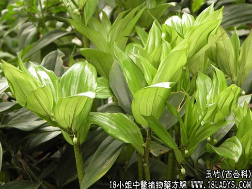

【中药概述】
为百合科草本植物玉竹的根茎。甘、平。归肺、胃经。
1．润肺止咳：用于肺阴不足之肺燥干咳痰少，有养阴润肺止咳之效，如（沙参麦门冬汤）。
2．生津养胃：用于胃阴不足之热伤胃阴，津液不足，咽干口渴等，如（<温病条辨>玉竹麦门冬汤）（<通俗伤寒论>加减葳蕤汤）。
3．阴虚外感：用于有养阴不恋邪之长，故用治素体阴虚，复感外邪之身热头痛，心烦口渴等症，常与薄荷，白薇，豆豉，桔梗等配伍。
【药效鉴别】
玉竹补而不腻，无恋邪之弊，功能与天门冬、麦门冬相近，配伍应用，能增强养阴生津、润肺止咳作用。玉竹专治肺胃燥热。
【应用与配伍】
用于燥咳，劳嗽。玉竹入肺胃二经，甘寒质润，功善滋阴润燥，养胃生津。肺胃燥热，阴液不足，干咳少痰，口燥咽干，常配沙参、麦冬、桑叶等，共奏滋明清热、润燥止咳之功，如《温病条辨》沙参麦冬汤；本品性平而不过寒，故治凉燥伤肺，可选配杏仁、紫苏叶、前胡、桔梗之类，以疏散燥邪、润肺止咳。治阴虚劳嗽，玉竹滋阴润肺，常配生地、知母、贝母等滋阴清热、润肺止咳；兼低热不退者，还可加地骨皮、青蒿、白薇等清退虚热。 用于热病咽干口渴，内热消渴。玉竹益胃生津、润燥止渴，治热病后期胃阴未复，或脏腑失调、内火伤及胃阴，饥不欲食，口舌干燥等，多与沙参、麦冬、生地、冰糖等同施，如《温病条辨》玉竹麦门冬汤、益胃汤。治内热消渴，可配天花粉、山药、生地黄、生葛根等，以滋阴清热、生津止渴。用于阴虚外感。玉竹补而不腻，无敛邪之弊，对素体阴虚，复有外感之身热，微恶风寒，干咳痰少，心烦口干等，多配薄荷、豆鼓、桔梗等，滋阴透表，如《通俗伤寒论》加减葳藐汤。此外，阴虚内风旋动之头昏眩晕，阴血亏虚不能柔儒筋脉而挛缩疼痛，用玉竹有滋阴息风、养液柔筋之功。
【药理作用】
1．玉竹含有的甾甙，对心肌的作用与铃兰制剂类似。玉竹配糖体对离体蛙心有强心作用，玉竹煎剂的作用与玉竹配糖体类似。
2．玉竹浸膏腹腔注射，可增强烧伤小鼠腹腔巨噬细胞吞噬作用，提高血清溶血素抗体水平，改善脾淋巴细胞对ConA的增殖反应。
【化学成分】
含铃兰甙、铃兰苦甙、山奈酚甙、槲皮醇甙、皂甙、白屈菜酸、粘液质、门冬酰胺、葡萄糖、阿拉伯糖和甘露醇，胡萝卜素、维生素C、维生素B1等。
【用量用法】
本品10——15g，水煎服。
【使用注意】
痰湿气滞者禁服，脾虚便溏者慎服。
1．《本草经集注》：“畏卤咸。”
2．《本草崇原》：“阴病内寒，此为大忌。”
3．《药性纂要》：“脾气寒滑，胃有痰湿者不宜用。”
4．《会约医镜•本草》：“大便溏泻，更为忌之。”